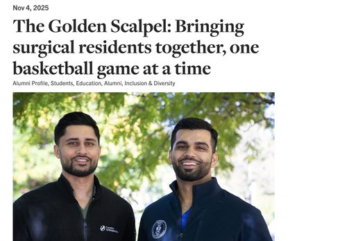
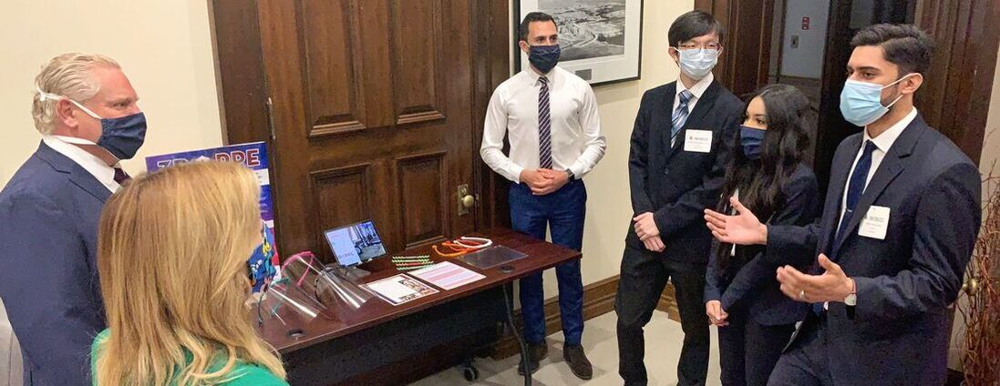
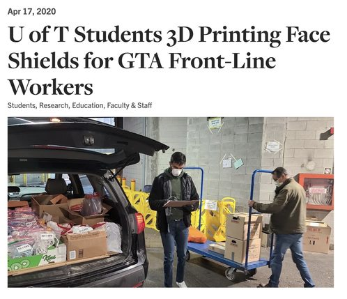

I have had the privilege of leading a number of initiatives, often alongside remarkably talented colleagues. They have ranged from humanitarian and disaster relief with Humanity First Canada, to pandemic response through 3D PPE, health advocacy through CHAT (Conference on Health Advocacy Toronto), and medical education through COSMEC.ca (Canadian Orthopaedic Surgery Medical Education Course), GoldenScalpel.ca and CardiacClinic.ca.
I have also spoken with the media about this work which is showcased below.
I have also spoken with the media about this work which is showcased below.


3D-printed face shields for front-line workers
3D-printed face shields for front-line workers

Feeding the hungry: McMaster University
Read the story
